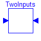 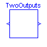 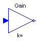 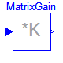 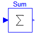 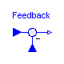 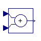 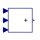 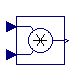 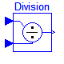 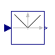 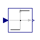 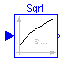 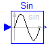 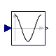 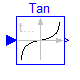 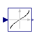 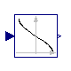 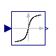 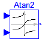 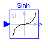 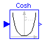 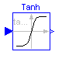 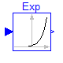 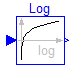 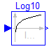 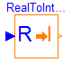 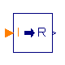 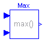 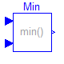 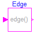 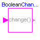 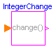
This package contains basic mathematical operations, such as summation and multiplication, and basic mathematical functions, such as sqrt and sin, as input/output blocks. All blocks of this library can be either connected with continuous blocks or with sampled-data blocks. In particular the following operations and functions are provided:
TwoInputs Change causality of input signals. TwoOutputs Change causality of output signals. Gain Output the input multiplied by a scalar gain MatrixGain Output the product of a gain matrix with the input Sum Output the sum of the elements of the input vector Feedback Output difference between commanded and feedback input Add Output the sum of the two inputs Add3 Output the sum of the three inputs Product Output product of the two inputs Division Output first input divided by second input Abs Output the absolute value of the input Sign Output the sign of the input Sqrt Output the square root of the input Sin Output the sine of the input Cos Output the cosine of the input Tan Output the tangent of the input Asin Output the arc sine of the input Acos Output the arc cosine of the input Atan Output the arc tangent of the input Atan2 Output atan(u1/u2) of the inputs u1 and u2 Sinh Output the hyperbolic sine of the input Cosh Output the hyperbolic cosine of the input Tanh Output the hyperbolic tangent of the input Exp Output the exponential (base e) of the input Log Output the natural (base e) logarithm of the input Log10 Output the base 10 logarithm of the input RealToInteger Output the nearest Integer value to the input IntegerToReal Output the input as Real value Max Output the maximum of the two inputs Min Output the minimum of the two inputs Edge Set output to true at rising edge of the input BooleanChange Set output to true when Boolean input changes IntegerChange Set output to true when Integer input changes
Release Notes:
Copyright © 1999-2002, Modelica Association and DLR.
The Modelica package is free software; it can be redistributed and/or modified under the terms of the Modelica license, see the license conditions and the accompanying disclaimer in the documentation of package Modelica in file "Modelica/package.mo".
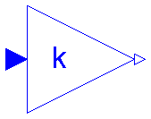
This block computes the output y=outPort.signal as element-wise product of gain k with the input u = inPort.signal:
y[i] = k[i] * u[i];
Release Notes:
| Name | Default | Description |
|---|---|---|
| k[:] | {1} | Gain vector multiplied element-wise with input vector |
block Gain
"Output the element-wise product of a gain vector with the input signal vector"
parameter Real k[:]={1}
"Gain vector multiplied element-wise with input vector";
protected
Real u[size(k, 1)] "Input signals";
Real y[size(k, 1)] "Output signals";
public
Interfaces.InPort inPort(final n=size(k, 1)) "Input signal connector";
Interfaces.OutPort outPort(final n=size(k, 1)) "Output signal connector";
equation
u = inPort.signal;
y = outPort.signal;
for i in 1:size(k, 1) loop
y[i] = k[i]*u[i];
end for;
end Gain;
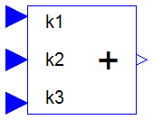
This block computes the output y=outPort.signal as sum of the three input signals u1=inPort1.signal, u2=inPort2.signal and u3=inPort3.signal:
y = k1*u1 + k2*u2 + k3*u3;
Example:
parameter: n = 2, k1= +2, k2= -3, k3=1;
results in the following equations:
y[1] = 2 * u1[1] - 3 * u2[1] + u3[1];
y[2] = 2 * u1[2] - 3 * u2[2] + u3[2];
Release Notes:
| Name | Default | Description |
|---|---|---|
| k1 | +1 | Gain of upper input |
| k2 | +1 | Gain of middle input |
| k3 | +1 | Gain of lower input |
| n | 1 | Dimension of input and output vectors. |
block Add3 "Output the sum of the three inputs" extends Interfaces.BlockIcon; parameter Real k1=+1 "Gain of upper input"; parameter Real k2=+1 "Gain of middle input"; parameter Real k3=+1 "Gain of lower input"; parameter Integer n=1 "Dimension of input and output vectors."; Interfaces.InPort inPort1(final n=n) "Connector 1 of Real input signals"; Interfaces.InPort inPort2(final n=n) "Connector 2 of Real input signals"; Interfaces.InPort inPort3(final n=n) "Connector 3 of Real input signals"; Interfaces.OutPort outPort(final n=n) "Connector of Real output signals"; equation outPort.signal = k1*inPort1.signal + k2*inPort2.signal + k3*inPort3.signal; end Add3;
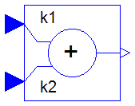
This block computes the output y=outPort.signal as sum of the two input signals u1=inPort1.signal and u2=inPort2.signal:
y = k1*u1 + k2*u2;
Example:
parameter: n = 2, k1= +2, k2= -3
results in the following equations:
y[1] = 2 * u1[1] - 3 * u2[1]
y[2] = 2 * u1[2] - 3 * u2[2]
Release Notes:
| Name | Default | Description |
|---|---|---|
| n | 1 | Dimension of input and output vectors. |
| k1 | +1 | Gain of upper input |
| k2 | +1 | Gain of lower input |
block Add "Output the sum of the two inputs" extends Interfaces.MI2MO; parameter Real k1=+1 "Gain of upper input"; parameter Real k2=+1 "Gain of lower input"; equation y = k1*u1 + k2*u2; end Add;
This block is used to enable assignment of values to variables preliminary defined as outputs (e.g. useful for inverse model generation).
Release Notes:
| Name | Default | Description |
|---|---|---|
| n | 1 | number of input signals |
block TwoInputs "Change causality of input signals (e.g. for inverse models)" extends Interfaces.BlockIcon; parameter Integer n=1 "number of input signals"; Interfaces.InPort inPort1(n=n); Interfaces.InPort inPort2(n=n); equation inPort1.signal = inPort2.signal; end TwoInputs;
This block is used to enable assignment of values to variables preliminary defined as inputs (e.g. useful for inverse model generation).
Release Notes:
| Name | Default | Description |
|---|---|---|
| n | 1 | number of input signals |
block TwoOutputs "Change causality of output signals (e.g. for inverse models)" extends Interfaces.BlockIcon; parameter Integer n=1 "number of input signals"; Interfaces.OutPort OutPort1(n=n); Interfaces.OutPort OutPort2(n=n); equation OutPort1.signal = OutPort2.signal; end TwoOutputs;
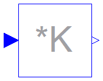
This block computes the output y=outPort.signal as product of the gain matrix K with the input signal vector u = inPort.signal:
y = K * u;
Example:
parameter: K = [0.12 2; 3 1.5]
results in the following equations:
| y[1] | | 0.12 2.00 | | u[1] |
| | = | | * | |
| y[2] | | 3.00 1.50 | | u[2] |
Release Notes:
| Name | Default | Description |
|---|---|---|
| K[:, :] | [1, 0; 0, 1] | Gain matrix which is multiplied with the input |
block MatrixGain
"Output the product of a gain matrix with the input signal vector"
parameter Real K[:, :]=[1, 0; 0, 1]
"Gain matrix which is multiplied with the input";
extends Interfaces.MIMO(final nin=size(K, 2), final nout=size(K, 1));
equation
y = K*u;
end MatrixGain;
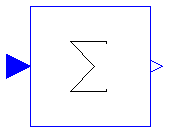
This block computes the output y=outPort.signal[1] as sum of the elements of the input signal vector u=inPort.signal:
y = u[1] + u[2] + ... + u[nin];
Example: With parameter nin = 3 results the following equation:
y = u[1] + u[2] + u[3];
Optionally, the parameter Real k[nin]=ones(nin) could be changed to weight the sum elements in order to calculate the scalar product
y = k*u = k[1]*u[1] + k[2]*u[2] + ... + k[nin]*u[nin] .
Release Notes:
| Name | Default | Description |
|---|---|---|
| nin | 1 | Number of inputs |
| k[nin] | ones(nin) | Optional: sum coefficients |
block Sum "Output the sum of the elements of the input vector" extends Interfaces.MISO; parameter Real k[nin]=ones(nin) "Optional: sum coefficients"; equation y = k*u; end Sum;

This block computes the output y=outPort.signal as difference of the commanded input u1=inPort1.signal and the feedback input u2=inPort2.signal:
y = u1 - u2;
Example:
parameter: n = 2
results in the following equations:
y[1] = u1[1] - u2[1]
y[2] = u1[2] - u2[2]
Release Notes:
| Name | Default | Description |
|---|---|---|
| n | 1 | size of input and feedback signal |
block Feedback "Output difference between commanded and feedback input" parameter Integer n=1 "size of input and feedback signal"; Interfaces.InPort inPort1(final n=n); Interfaces.InPort inPort2(final n=n); Interfaces.OutPort outPort(final n=n); equation outPort.signal = inPort1.signal - inPort2.signal; end Feedback;
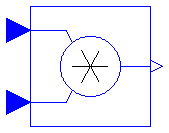
This block computes the output y=outPort.signal element-wise as product of the corresponding elements of the two inputs u1=inPort1.signal and u2=inPort2.signal:
y[i] = u1[i] * u2[i];
Release Notes:
| Name | Default | Description |
|---|---|---|
| n | 1 | Dimension of input and output vectors. |
block Product "Output product of the two inputs"
extends Interfaces.MI2MO;
equation
for i in 1:n loop
y[i] = u1[i]*u2[i];
end for;
end Product;
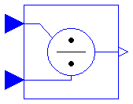
This block computes the output y=outPort.signal element-wise by dividing the corresponding elements of the two inputs u1=inPort1.signal and u2=inPort2.signal:
y[i] = u1[i] / u2[i];
Release Notes:
| Name | Default | Description |
|---|---|---|
| n | 1 | Dimension of input and output vectors. |
block Division "Output first input divided by second input"
extends Interfaces.MI2MO;
equation
for i in 1:n loop
y[i] = u1[i]/u2[i];
end for;
end Division;
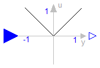
This block computes the output y=outPort.signal element-wise as absolute value of the input u=inPort.signal:
y[i] = abs( u[i] );
Release Notes:
| Name | Default | Description |
|---|---|---|
| n | 1 | Number of inputs (= number of outputs) |
block Abs "Output the absolute value of the input" extends Interfaces.MIMOs; equation y = abs(u); end Abs;
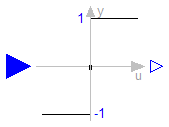
This block computes the output y=outPort.signal element-wise as sign of the input u=inPort.signal:
1 if u[i] > 0
y[i] = 0 if u[i] == 0
-1 if u[i] < 0
Release Notes:
| Name | Default | Description |
|---|---|---|
| n | 1 | Number of inputs (= number of outputs) |
block Sign "Output the sign of the input" extends Interfaces.MIMOs; equation y = sign(u); end Sign;
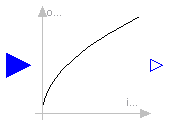
This block computes the output y=outPort.signal element-wise as square root of the input u=inPort.signal:
y[i] = sqrt( u[i] );
All elements of the input vector shall be zero or positive. Otherwise an error occurs.
Release Notes:
| Name | Default | Description |
|---|---|---|
| n | 1 | Number of inputs (= number of outputs) |
block Sqrt "Output the square root of the input (input >= 0 required)" extends Interfaces.MIMOs; equation y = sqrt(u); end Sqrt;
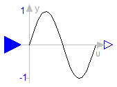
This block computes the output y=outPort.signal element-wise as sine of the input u=inPort.signal:
y[i] = sin( u[i] );
Release Notes:
| Name | Default | Description |
|---|---|---|
| n | 1 | Number of inputs (= number of outputs) |
block Sin "Output the sine of the input" extends Interfaces.MIMOs; equation y = Modelica.Math.sin(u); end Sin;
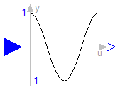
This block computes the output y=outPort.signal element-wise as cos of the input u=inPort.signal:
y[i] = cos( u[i] );
Release Notes:
| Name | Default | Description |
|---|---|---|
| n | 1 | Number of inputs (= number of outputs) |
block Cos "Output the cosine of the input" extends Interfaces.MIMOs; equation y = Modelica.Math.cos(u); end Cos;
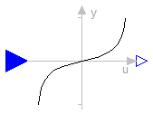
This block computes the output y=outPort.signal element-wise as tan of the input u=inPort.signal:
y[i] = tan( u[i] );
Release Notes:
| Name | Default | Description |
|---|---|---|
| n | 1 | Number of inputs (= number of outputs) |
block Tan "Output the tangent of the input" extends Interfaces.MIMOs; equation y = Modelica.Math.tan(u); end Tan;

This block computes the output y=outPort.signal element-wise as the sine-inverse of the input u=inPort.signal:
y[i] = asin( u[i] );
The absolute values of the elements of the input u need to be less or equal to one (abs( u[i] ) <= 1). Otherwise an error occurs.
Release Notes:
| Name | Default | Description |
|---|---|---|
| n | 1 | Number of inputs (= number of outputs) |
block Asin "Output the arc sine of the input" extends Interfaces.MIMOs; equation y = Modelica.Math.asin(u); end Asin;
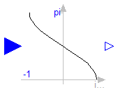
This block computes the output y=outPort.signal element-wise as the cosine-inverse of the input u=inPort.signal:
y[i] = acos( u[i] );
The absolute values of the elements of the input u need to be less or equal to one (abs( u[i] ) <= 1). Otherwise an error occurs.
Release Notes:
| Name | Default | Description |
|---|---|---|
| n | 1 | Number of inputs (= number of outputs) |
block Acos "Output the arc cosine of the input" extends Interfaces.MIMOs; equation y = Modelica.Math.acos(u); end Acos;
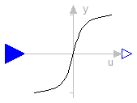
This block computes the output y=outPort.signal element-wise as the tangent-inverse of the input u=inPort.signal:
y[i] = atan( u[i] );
Release Notes:
| Name | Default | Description |
|---|---|---|
| n | 1 | Number of inputs (= number of outputs) |
block Atan "Output the arc tangent of the input" extends Interfaces.MIMOs; equation y = Modelica.Math.atan(u); end Atan;
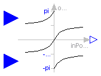
This block computes the output y=outPort.signal element-wise as the tangent-inverse of the input u1=inPort1.signal divided by input u2=inPort2.signal:
y[i] = atan2( u1[i], u2[i] );
u1[i] and u2[i] shall not be zero at the same time instant. Atan2 uses the sign of u1[i] and u2[i] in order to construct the solution in the range -180 deg <= y[i] <= 180 deg, whereas block Atan gives a solution in the range -90 deg <= y[i] <= 90 deg.
Release Notes:
| Name | Default | Description |
|---|---|---|
| n | 1 | Dimension of input and output vectors. |
block Atan2 "Output atan(u1/u2) of the inputs u1 and u2" extends Interfaces.MI2MO; equation y = Modelica.Math.atan2(u1, u2); end Atan2;
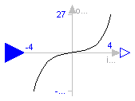
This block computes the output y=outPort.signal element-wise as the hyperbolic sine of the input u=inPort.signal:
y[i] = sinh( u[i] );
Release Notes:
| Name | Default | Description |
|---|---|---|
| n | 1 | Number of inputs (= number of outputs) |
block Sinh "Output the hyperbolic sine of the input" extends Interfaces.MIMOs; equation y = Modelica.Math.sinh(u); end Sinh;
This block computes the output y=outPort.signal element-wise as the hyperbolic cosine of the input u=inPort.signal:
y[i] = cosh( u[i] );
Release Notes:
| Name | Default | Description |
|---|---|---|
| n | 1 | Number of inputs (= number of outputs) |
block Cosh "Output the hyperbolic cosine of the input" extends Interfaces.MIMOs; equation y = Modelica.Math.cosh(u); end Cosh;
This block computes the output y=outPort.signal element-wise as the hyperbolic tangent of the input u=inPort.signal:
y[i] = tanh( u[i] );
Release Notes:
| Name | Default | Description |
|---|---|---|
| n | 1 | Number of inputs (= number of outputs) |
block Tanh "Output the hyperbolic tangent of the input" extends Interfaces.MIMOs; equation y = Modelica.Math.tanh(u); end Tanh;
This block computes the output y=outPort.signal element-wise as the exponential (of base e) of the input u=inPort.signal:
y[i] = exp( u[i] );
Release Notes:
| Name | Default | Description |
|---|---|---|
| n | 1 | Number of inputs (= number of outputs) |
block Exp "Output the exponential (base e) of the input" extends Interfaces.MIMOs; equation y = Modelica.Math.exp(u); end Exp;
This block computes the output y=outPort.signal element-wise as the natural (base e) logarithm of the input u=inPort.signal:
y[i] = log( u[i] );
An error occurs if the elements of the input u are zero or negative.
Release Notes:
| Name | Default | Description |
|---|---|---|
| n | 1 | Number of inputs (= number of outputs) |
block Log "Output the natural (base e) logarithm of the input (input > 0 required)" extends Interfaces.MIMOs; equation y = Modelica.Math.log(u); end Log;
This block computes the output y=outPort.signal element-wise as the base 10 logarithm of the input u=inPort.signal:
y[i] = log10( u[i] );
An error occurs if the elements of the input u are zero or negative.
Release Notes:
| Name | Default | Description |
|---|---|---|
| n | 1 | Number of inputs (= number of outputs) |
block Log10 "Output the base 10 logarithm of the input (input > 0 required)" extends Interfaces.MIMOs; equation y = Modelica.Math.log10(u); end Log10;

This block computes the output y=outPort.signal element-wise as nearest integer value of the input u=inPort.signal:
y[i] = integer( floor( u[i] + 0.5 ) ) for u[i] > 0;
y[i] = integer( ceil ( u[i] - 0.5 ) ) for u[i] < 0;
| Name | Default | Description |
|---|---|---|
| n | 1 | Number of input and output signals |
block RealToInteger "Convert real to integer signals"
extends Interfaces.IntegerBlockIcon;
parameter Integer n=1 "Number of input and output signals";
protected
Real u[n];
public
Interfaces.InPort inPort(final n=n);
Interfaces.IntegerOutPort outPort(final n=n);
equation
u = inPort.signal;
for i in 1:n loop
outPort.signal[i] = if (u[i] > 0) then integer(floor(u[i] + 0.5)) else
integer(ceil(u[i] - 0.5));
end for;
end RealToInteger;

This block computes the output y=outPort.signal element-wise as Real equivalent of the Integer input u=inPort.signal:
y[i] = u[i];
where u is of Integer and y of Real type.
| Name | Default | Description |
|---|---|---|
| n | 1 | Number of input signals (= number of output signals) |
block IntegerToReal "Convert integer to real signals" extends Interfaces.BlockIcon; parameter Integer n=1 "Number of input signals (= number of output signals)"; Interfaces.OutPort outPort(final n=n); Interfaces.IntegerInPort inPort(final n=n); equation outPort.signal = inPort.signal; end IntegerToReal;

This block computes the output y=outPort.signal element-wise as maximum of the two inputs u1=inPort1.signal and u2=inPort2.signal:
y[i] = max ( u1[i] , u2[i] );
| Name | Default | Description |
|---|---|---|
| n | 1 | Dimension of input and output vectors. |
block Max "Pass through the largest signal"
extends Interfaces.MI2MO;
equation
for i in 1:n loop
y[i] = max(u1[i], u2[i]);
end for;
end Max;

This block computes the output y=outPort.signal element-wise as minimum of the two inputs u1=inPort1.signal and u2=inPort2.signal:
y[i] = min ( u1[i] , u2[i] );
| Name | Default | Description |
|---|---|---|
| n | 1 | Dimension of input and output vectors. |
block Min "Pass through the smallest signal"
extends Interfaces.MI2MO;
equation
for i in 1:n loop
y[i] = min(u1[i], u2[i]);
end for;
end Min;

This block sets the Boolean output y=outPort.signal element-wise to true, when the Boolean input u=inPort.signal shows a rising edge:
y[i] = edge( u[i] );
| Name | Default | Description |
|---|---|---|
| n | 1 | Number of inputs (= number of outputs) |
block Edge "Indicates rising edge of boolean signal"
extends Interfaces.BooleanMIMOs;
equation
for i in 1:n loop
y[i] = edge(u[i]);
end for;
end Edge;

This block sets the Boolean output y=outPort.signal element-wise to true, when the Boolean input u=inPort.signal shows a rising or falling edge, i.e., when the signal changes:
y[i] = change( u[i] );
| Name | Default | Description |
|---|---|---|
| n | 1 | Number of inputs (= number of outputs) |
block BooleanChange "Indicates boolean signal changing"
extends Interfaces.BooleanMIMOs;
equation
for i in 1:n loop
y[i] = change(u[i]);
end for;
end BooleanChange;

This block sets the Boolean output y=outPort.signal element-wise to true, when the Integer input u=inPort.signal changes:
y[i] = change( u[i] );
| Name | Default | Description |
|---|---|---|
| n | 1 | Number of inputs (= number of outputs) |
block IntegerChange "Indicates integer signal changing"
extends Interfaces.IntegerMIBooleanMOs;
equation
for i in 1:n loop
y[i] = change(u[i]);
end for;
end IntegerChange;